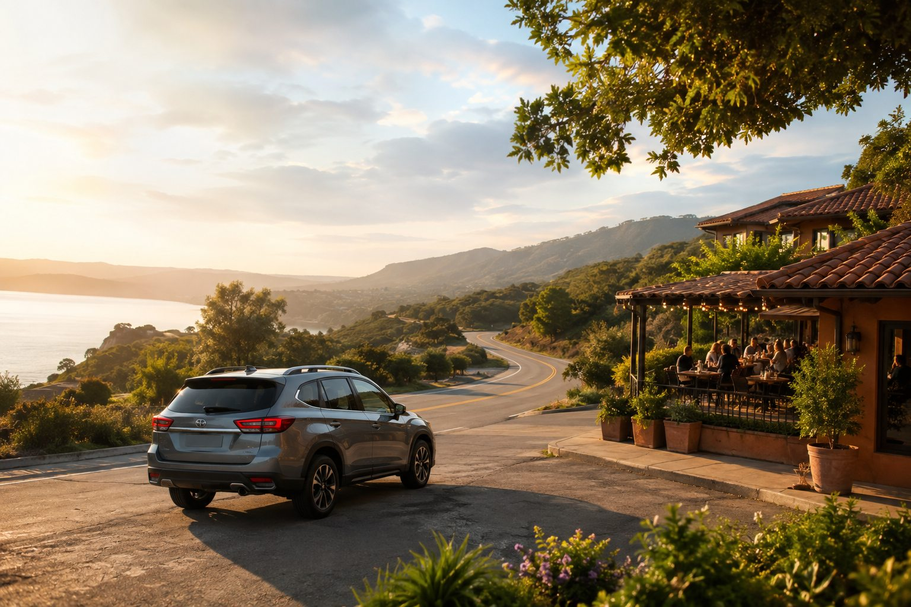
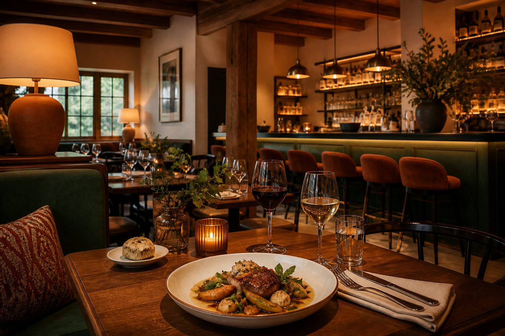
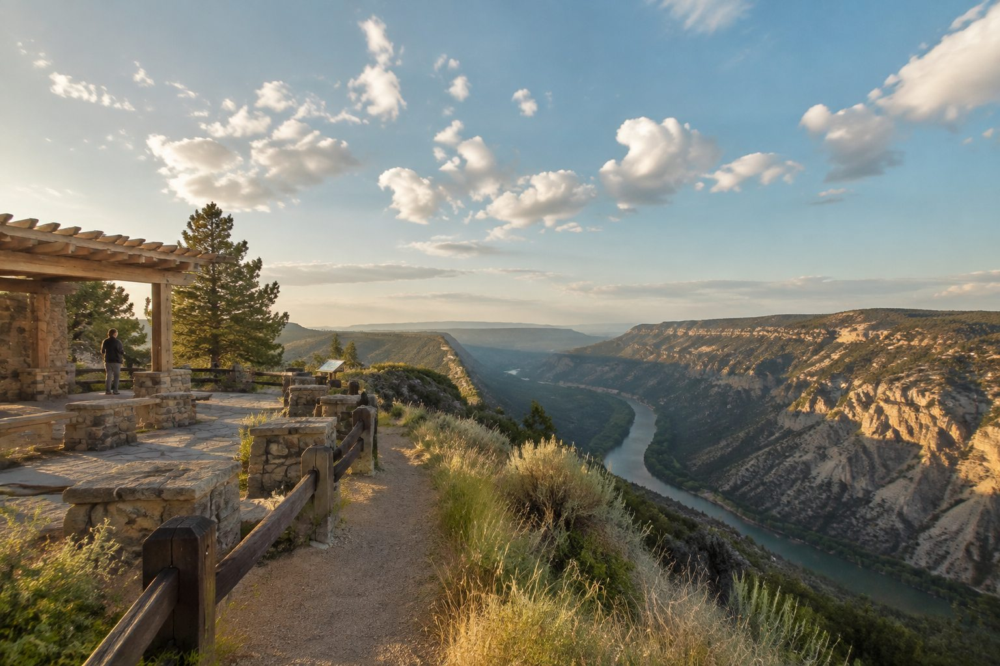

Route dining engine
Find the best meal stop without wrecking the drive.
The planner predicts where you will be near meal time, ranks five-star restaurants by detour and review confidence, then adds the best stop to the route.

Start
Columbus
Lunch
Copper Fern Table
Arrive
Asheville
Five-star food stops
3 matches within 15 minutes

Copper Fern Table
Farm kitchen near the route splitBest balance of review volume, lunch timing, and shortest route interruption.
Juniper Smokehouse
Regional barbecue beside the bypassGreat if the group wants a slower stop with bigger portions and easy parking.
Market Lane Noodles
Fast counter-service downtownStrong food choice, but the planner flags it when the detour limit is tighter.
Nearby attraction ideas
Stretch the stop without losing the day.

+6 min from lunch
Ridgeview Overlook
Quick scenic reset with parking, restrooms, and a short overlook path.
+11 min from lunch
Riverwalk Murals
Low-friction downtown stop for photos, coffee, and a short walk.
+14 min from lunch
Old Depot Market
Good family stop with snacks, local vendors, and covered seating.